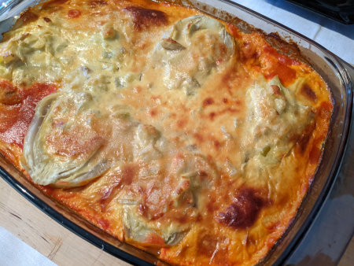

| Zutaten für 4 Personen: | |
| 1 | Schalotte |
| 1 El | Butter |
| 1.5 Tl | edelsüsser Paprika |
| 1 Dose (400g) | Pelatitomaten |
| 4 | Fenchelknollen |
| 125g | Frischkäse nature oder mit Kräutern |
| 2 | Eigelb |
| 0.5dl | Rahm |
| 75g | Reibkäse |
Schalotte schälen und fein hacken. In der Butter hellgelb dünsten. Mit Paprika bestäuben und kurz weiterdünsten. Dann die Pelati beifügen und die Sauce auf grossem Feuer etwa 5 Minuten einkochen lassen. Mit einem Stabmixer oder im Mixer fein pürieren. Pikant mit Salz, Pfeffer und Paprika würzen. Die Sauce etwa 2cm hoch in eine Gratinplatte füllen.
Die Fenchel rüsten. Die Knollen über Dampf oder in kochendem Salzwasser 5 Minuten vorgaren. Herausheben und etwas abkühlen lassen. Die Knollen halbieren und den Mittelteil auslösen; der Rand soll jedoch noch etwa 2 Schalen umfassen. Die Fenchelhälften in die Paprikasauce setzen.
Etwa die Hälfte des ausgelösten Fenchels fein hacken (der Rest kann z.B. für eine Suppe verwendet werden).
Frischkäse, Eigelb und Rahm glatt rühren. Gehackten Fenchel und die Hälfte des Reibkäses untermischen und mit Salz sowie Pfeffer würzen. Bergartig in die Fenchelschalen füllen und mit dem restlichen Käse bestreuen.
Den gefüllten Fenchel an Paprikasauce im auf 200°C vorgeheizten Ofen auf der zweituntersten Rille während 15-20 Minuten überbacken.
2 Personen: Zutaten halbieren, 1 Person: Zutaten vierteln.
Pro Portion ca. 14g Eiweiss, 24g Fett, 12g Kohlenhydrate. 326 kKalorien oder 1363 kJoule
Kochen 1/2 2003 Seite 23
Scheckt gut, RE, 23 April 2022
@LINKBACK_TAG@ @WAKELOCK@